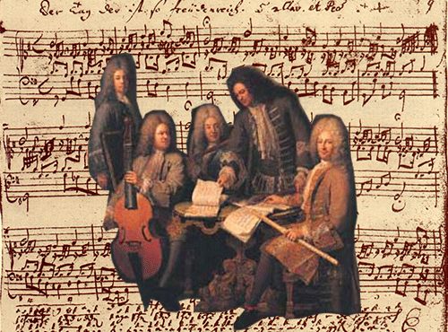
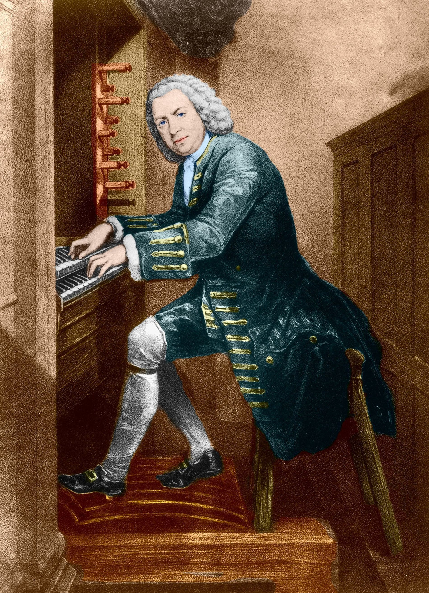
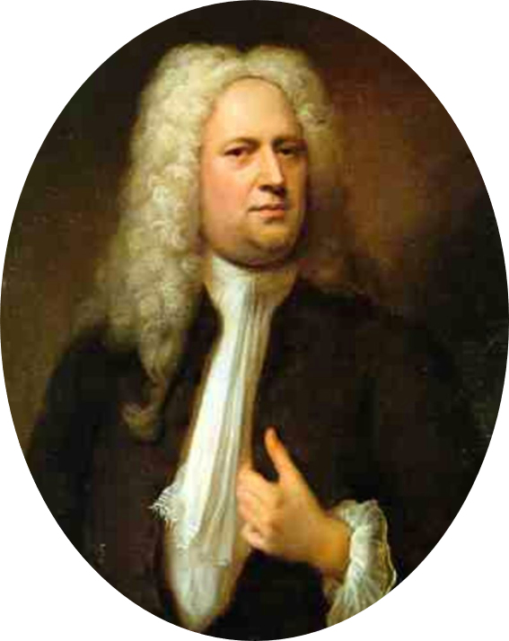
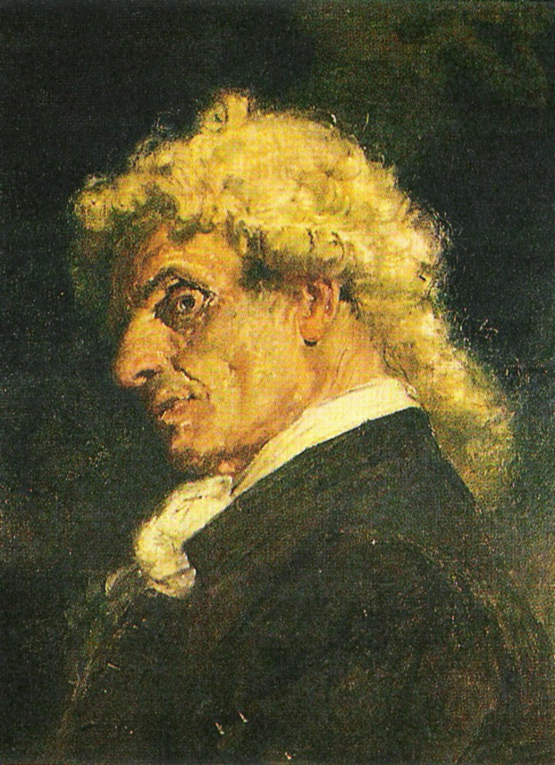

MÚSICA BARROCA
Historia
Dentro de las etapas de la música tenemos que hablar sobre el Barroco. Ubicamos la época barroca en Europa durante el s. XVII, aproximadamente data desde el nacimiento de la ópera (año 1600) hasta la muerte del compositor Johan Sebastian Bach (1750). El barroco sucedió con más auge en Italia, Alemania, Inglaterra, Francia y España. Durante esta etapa la ideología se aplicaba no solo a la música sino al arte en general. Se le dio especial apreciación a la hechura, los extremos y el contraste, en ocasiones se le describe incluso como “pesado” y “retorcido”. Para la música este tiempo en la historia resulta ser interesante puesto que fue un momento de reformas y transiciones religiosas. A consecuencia, la música fue utilizada como un medio de propagada por parte de la iglesia y la nobleza. Es de esta manera que la música se vuelve un elemento poderoso como espectáculo público, determinante e influyente y el músico pasa a ser un sirviente de la nobleza.
|  | En el nacimiento del Barroco musical confluyen dos factores: uno de tipo tecnológico (la generalización del bajo continuo) y otro de tipo social (el nacimiento del ópera como espectáculo). |
Caracteristicas
Es en ésta época que se desarrolló del lenguaje instrumental de la orquesta. Esto sucede a raíz de la popularidad de la ópera, que se interpretaba en grandes teatros y era acompañada por grupos instrumentales. En la orquesta barroca, el área predominante fueron los instrumentos de cuerda frotada.
Estos son los elementos característicos musicales en la música barroca:
Compositores del Barroco:
| BACH |  | Johann Sebastian Bach (Eisenach, Sacro Imperio Romano Germánico, 21 de marzo./ 31 de marzo de 1685greg.-Leipzig, Sacro Imperio Romano Germánico, 28 de julio de 1750) fue un compositor, músico, director de orquesta, maestro de capilla, cantor y profesor alemán del período barroco. Fue el miembro más importante de una de las familias de músicos más destacadas de la historia, con más de 35 compositores famosos: la familia Bach. Tuvo una gran fama como organista y clavecinista en toda Europa por su gran técnica y capacidad de improvisar música al teclado. Además del órgano y del clavecín, tocaba el violín y la viola da gamba....VER MAS |
| VIVALDI |  |
Antonio Vivaldi (Venecia, 4 de marzo de 1678-Viena, 28 de julio de 1741) fue un compositor, violinista, impresario, profesor y sacerdote católico veneciano del Barroco. Era apodado Il prete rosso («El cura rojo») por ser sacerdote y pelirrojo. Se le considera uno de los más grandes compositores barrocos, su influencia durante su vida se extendió por toda Europa y fue fundamental en el desarrollo de la música instrumental de Johann Sebastian Bach.VER MAS | HAENDEL |  | Georg Friedrich Händel (pronunciación en alemán: /ˈgeːɔʁk ˈfʁiːdʁɪç ˈhɛn.dəl/); en inglés George Frideric (o Frederick) Handel (Halle, Brandeburgo-Prusia; 23 de febrerojul./ 5 de marzo de 1685greg.-Londres; 14 de abril de 1759) fue un compositor alemán, posteriormente nacionalizado inglés, considerado una de las figuras cumbre de la historia de la música, especialmente la barroca, y uno de los más influyentes compositores de la música occidental y universal. En la historia de la música, es el primer compositor moderno en haber adaptado y enfocado su música para satisfacer los gustos y necesidades del público, en vez de los de la nobleza y de los mecenas, como era habitual.VER MAS |
| TARTINI |  | Giuseppe Tartini (8 de abril de 1692 – 26 de febrero de 1770) fue un músico italiano, violinista, compositor y estudioso de la música de su tiempo (barroco). Fue uno de los mayores virtuosos del violín de su época; sus innovaciones en el estudio del violín solo fueron superadas con la llegada de Niccolò Paganini (1782-1840). Tartini nació en Pirano, ciudad de la península de Istria, en la entonces República de Venecia, hoy Pirán, Eslovenia. Su madre era eslovena y su padre un veneciano comerciante de sal y administrador de tierras en la costa de Istria.VER MAS |